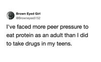

Python's security developer-in-residence Seth Larson reports from this year's official core developer Python Language Summit:
"No one said 'don't do this' last year". After testing the waters at PyCon US 2025, [software engineer] David Hewitt returned to the Python Language Summit asking what Python core developers want from Rust, along with proposed timelines, phases, and success criteria for how the Rust for CPython project might proceed and become a permanent fixture within the CPython project. David is acting as an "ambassador" for the Rust for CPython project team, which is currently led by core developers Kirill Podoprigora and Emma Smith as authors of the Rust for CPython PEP draft. Emma also spoke at PyCon US 2026 about the Rust for CPython project. The team itself is around 60 developers in a Discord channel, among them a "few [Python] core developers" and a "delegation from the Rust project".
The team has experience with previous projects integrating Rust into existing codebases, such as Android and the Linux kernel, and is "excited by the work and keen to support [the project] if we proceed". Showing how adopting Rust may specifically help CPython, David noted how the number of issues labeled with " type-crash" has been steadily rising over time... David explained that Jeff Vander Stoep described Rust in Android as "move fast and fix things", and that "fewer revisions for patches of the same size" was the experience Android has had since adopting Rust....
One of the biggest concerns from a year ago was Rust's lack of platform support compared to CPython, which at the time of writing officially supports 20 different architectures and platforms at either Tier 1, 2, or 3. David shared that Rust's support of different platforms has "widened since last year" and was becoming "less and less of a concern". The proposal would be to ask Python distributors to attempt using the optional Rust support in Python 3.16 (October 2027) and report platform-specific issues upstream in time to be resolved around the Python 3.17 timeline (October 2028)...
[T]he first Rust code to ship in Python would be in Python 3.16 [October 2027], where it would be completely optional, with the existing C code kept as a fallback. The earliest that Rust would become required to build CPython is Python 3.18 in 2029, at least three years away... The Rust for CPython team has selected the zlib module as the first module to be given an optional Rust implementation because they "wanted to achieve a significant improvement" with a "small scope". The proposed Rust implementation will use zlib-rs, which is "heavily tested and used by the Firefox, uv, and Cargo" projects and "faster than zlib and zlib-ng on many platforms".... This small change would have an impact: the zlib compression algorithm is "widely used by Python packaging", meaning that (almost) "every pip install in Python 3.16 will be sped up" if the proposal is accepted.
Thanks to long-time Slashdot reader RoccamOccam for sharing the article.
Read more of this story at Slashdot.
Last month, the U.S. House passed the AM Radio for Every Vehicle Act, reports the Chicago Sun-Times. They call it "a bipartisan effort to require AM radio in new vehicles," adding that the bill now "awaits action in the Senate, where a companion measure has already garnered support, according to public records."
Broadcasters said AM radio remains a critical source of information, offering news and weather alerts, particularly when cell networks and internet service are disrupted or unreliable... "AM radio — all radio — has always been about connection, and in Chicago, especially, the connection is incredibly strong," Mary Sandberg Boyle, vice president and general manager of WGN-AM 720, said. "You don't need a subscription. You don't need a data plan or an app. You turn on the radio, and it's there..." Boyle said the accessibility of radio becomes especially important during severe weather and breaking news situations. "That's when local radio is really more important because we have the ability to stay live, pivot our content and what we're covering, and we can access a large amount of audience members very quickly and keep everybody safe," she said. Boyle also serves on the board of directors of the National Association of Broadcasters, which has argued that preserving AM radio access is an access issue rather than a matter of nostalgia.
The legislation emerged after several automakers removed AM radio from certain electric vehicle models, citing interference from electric power systems. Companies including Tesla, Rivian, Volvo and others have either eliminated or limited AM radio in some EVs. The Alliance for Automotive Innovation, which represents most major automakers, has opposed the requirement. In congressional testimony last year, President and CEO John Bozzella argued that "analog AM radio does not contribute to motor vehicle safety" and requiring it as standard equipment "is not necessary to ensure public safety."
Under the bill, the U.S. Department of Transportation would be required to develop regulations ensuring AM radio remains available in new vehicles sold in the U.S. The measure would also bar automakers from charging consumers separately for AM radio access... While public discussion around the legislation has largely focused on emergency alerts and news access, some scholars say preserving AM radio also has implications for media diversity... "I think the media landscape is really overwhelmingly homogenized right now, and AM radio is important in many markets," [said Zachary McDowell, associate professor of communications at the University of Illinois Chicago]. "It's a space that still allows for all sorts of different voices that is still open and accessible."
The article also includes this quote from Rodney Gibbs, executive director of Heartland Signal, which operates a local talk radio station. "Despite the kind of shiny objects that digital media is, AM radio still has a viable and durable audience. It's a daily, unscripted, authentic conversation between the host and the listeners. You don't get that from broadcast television. You don't get that from digital media."
Read more of this story at Slashdot.
James Cameron's Avatar is no longer the highest-grossing movie in box office history. That honor now goes to the Disney/Marvel Studios film Avengers: Endgame. Variety explains:
"Avatar" spent a decade as the biggest release ever until "Avengers: Endgame" overtook the record in 2019 during its initial run on the big screen. "Endgame" dropped to No. 2 on all-time charts in 2021 when "Avatar" returned to theaters in advance of 2021's "Avatar: The Way of Water." Five years later, and Earth's Mightiest Heroes have triumphed over the Na'vi again.
Disney is popping Champagne no matter which big-screen behemoth claims the No. 1 spot. "Avatar" was released by 20th Century Fox, which Disney now owns after the companies merged in 2019... [Last week's] re-release of "Endgame" has generated more than $126 million worldwide.
Together the 38 Marvel Studios movies "have generated more than $35 billion worldwide," notes an announcement on Disney's web site, "making the Marvel Cinematic Universe the most successful film franchise in history."
Their announcement adds that Disney "is responsible for seven of the 10 highest-grossing films of all time." That list also includes James Cameron's Titantic and his first two Avatar movies, but also this summer's Spider-Man: Brand New Dayand the earlier film Spider-Man: No Way Home, plus Marvel's 2018 film Avengers: Infinity War. Also among the top-10-of-all-time are Star Wars: The Force Awakens (2015) at #7 and last year's Zootopia 2.
Meanwhile Coyote vs. Acme was released for rent or purchase on streaming platforms Tuesday, and became the No. 1 most-watched movie in the Apple TV store for America and Canada, according to CBR. (Citing a report from FlixPatrol ) "On Rotten Tomatoes, Coyote vs. Acme has a near-perfect 96% Certified Fresh Tomatometer score based on critics' reviews, and a similar 94% Verified Hot Popcornmeter score based on audience reviews... Frank Scheck from The Hollywood Reporter called it "one of the best live-action/animation films ever."
Preorders have just opened for its DVD and 4K disks, and Coyote vs. Acme is also coming to Blu-ray writes IGN, "along with some hilarious outtakes that he described as 'not PG-rated.'"
Celebrating the film's $100 million box office take last week, the movie's distributors posted a very Coyote-like koan on social media. "It's only over when you stop trying."
Read more of this story at Slashdot.
0
"Physicists smashed gold nuclei together at nearly the speed of light and found an unexpected pattern in the particles..." writes Live Science.
"If confirmed, that pattern could help reveal how the hot soup of quarks and gluons that filled the universe in the first few microseconds after the Big Bang cooled and condensed into the protons and neutrons that make up ordinary matter today."
In every collision, particles are flung out sideways; how hard they are flung, on average, varies slightly from one collision to the next. Physicists expected the size of these variations to change smoothly as they adjusted the collision energy. Instead, the variations dipped, shrinking and then growing again. This dip could be a sign of a long-sought "critical point," a special set of conditions at which nuclear matter changes the way it transforms from one form to another.
The signal, detected by the STAR experiment at the Relativistic Heavy Ion Collider (RHIC) at Brookhaven National Laboratory in New York, is strong enough that it is very unlikely to be a statistical accident. However, the researchers cautioned that the dip is a tantalizing hint, not proof of the long-sought transition. They published their findings Sept. 22 in the journal Physical Review Letters...
The team analyzed roughly 1 billion collisions, measuring how hard charged particles were flung sideways out of the fireball, according to the article.
The dip "does point to a set of conditions where the behavior of nuclear matter changes, and it gives theorists a new, precise measurement to test their calculations against," study co-author Rutik Manikandhan, told Live Science.
Read more of this story at Slashdot.
"Free your BIOS today!" urges the web page for GNU Boot, calling it "a 100% free software project aimed at replacing the nonfree boot software (like BIOS or UEFI) of computers with free boot software.
GNU Boot is only a distribution: it reuses existing software projects like Coreboot, GRUB, SeaBIOS, etc. So it's not very different from 100% free GNU/Linux distributions like Trisquel or Guix.
Last month the Free Software Foundation announced they'd fiscally sponsor the project:
"The BIOS is a delicate but essential part of software freedom for computing today," said Zoë Kooyman, executive director of the FSF. "GNU Boot aims to make sure that we can continue using our computers in freedom. With the way it builds on the work of others to replace UEFI, we know it can remain firm in the free software philosophy and stay vital to digital autonomy and user freedom." Free boot firmware, such as GNU Boot, is responsible for loading the computer's operating system.
The work done by GNU Boot contributors has similarities to work done by GNU/Linux distributions: they package software like Coreboot or GNU GRUB, contribute to the upstream repositories of these projects, and assist them with documentation, among other tasks... When asked about their project joining the FSF's fiscal sponsorship program, co-maintainer Adrien Bourmault stated: "Making this decision with the FSF allows us to focus more on what we do best: writing and debugging code that keeps our machines fully free." Projects whose scope and purpose align with the FSF's mission and further mission-related activities can become fiscally sponsored by joining the FSF's Working Together for Free Software Fund.
Read more of this story at Slashdot.
A U.S. banking group just sued the government agency that issues America's federal bank charters, reports CoinDesk, "accusing it of exceeding its legal powers in granting national trust-bank status to crypto firms."
The agency's move "creates a gaping hole in financial regulation," according to the lawsuit by The Independent Community Bankers of America, one of America's largest banking advocacy organizations. It argues the move will "perversely allow entities engaged in highly risky cryptocurrency and digital assets activities to enter the banking system under lightly regulated national charters" which actually preempt many state regulations, including consumer protection laws.
But the move would also "place community banks at a severe competitive disadvantage," the lawsuit argues, "by allowing the national trust banks to offer many of the same services as community banks without complying with the same costly banking laws and regulations that apply to the community banks." This competitive advantage could "siphon deposits out of community banks and into deposit alternatives like cryptocurrency," which they describe as "highly volatile, prone to market crashes, cybercrime, and fraud" and lacking protections like deposit insurance.
They also warn that America's Office of the Comptroller of the Currency "has not managed an uninsured bank receivership in nearly one hundred years. But failures of risky uninsured national
trust banks could spread instability throughout the nation's financial system, including by spreading contagion risks to other traditional banks like community banks."
CoinDesk reports:
[The Independent Community Bankers of America] also played a significant role in pushing back against the Digital Asset Market Clarity Act that failed to advance in the U.S. Senate last month — in part due to the bankers' objections that its stablecoin provisions didn't protect them against direct competition with the deposit accounts that are core to their businesses.
Now, the group is targeting the trust charters crypto firms are pursuing as an entry point into the U.S. banking and payments system.
"Congress did not create the national trust charter as a side door into the banking system for crypto firms seeking the credibility of a federal bank charter," ICBA President and CEO Rebeca Romero Rainey said in a statement..
Read more of this story at Slashdot.
Politico EU reports:
The European Commission has rolled out an alternative to Microsoft Teams — but officials using it aren't impressed, with one describing the tool as "absolute shit."
The Commission introduced Element Pro over the summer as a "sovereign back-up to Teams," according to an internal staff memo seen by POLITICO. The platform is intended to provide a fallback for Commission communications if U.S.-based Teams becomes unavailable.... But three officials have questioned why the Commission needs the new system — and whether it works well enough to serve as a genuine backup. "I don't understand the added value here," one official wrote on an internal staff message board, seen by POLITICO. Another described the tool as "absolute shit." A third official said that, judging matters on how well Element Pro works compared to Teams, the U.S. would "instantly win the war" if it ever decided to switch off its technology...
The Commission hosts the Element system on its own infrastructure rather than relying on Microsoft's cloud. That gives the institution greater control over its communications data and systems... Element is a U.K. company whose software is used by governments and public-sector organizations in Europe... Element CEO Matthew Hodgson told POLITICO in a call using Element software that the Commission is still trialing it. "Obviously there are going to be some teething issues," he said, adding there will always be "cognitive dissonance" when switching to a new app, if only because the "buttons" are in a different place. He noted that the United Nations and NATO also use Element Pro.
The article adds that earlier this year, France announced millions of civil servants will switch to home-grown alternatives to American video-conferencing tools including Microsoft Teams and Zoom by 2027, while Austria's military also replaced Microsoft Office with the German-made LibreOffice last year.
Read more of this story at Slashdot.
"Scientists have discovered a virus that is a tiny bit human, carrying a gene it stole from our ancestors about 100,000 years ago," writes the New York Times. "And this virus may be using our own gene to infect us."
Phys.org explains that it's "both an important gene for brain function and a jumping gene capable of moving and inserting itself into genomes."
BC200 is found only in humans and related primates and was discovered in the late 1980s as an abundant noncoding RNA in human neurons. Although BC200's physiological function is poorly understood, evidence suggests it may be involved in regulating the translation of neuronal messenger RNAs into proteins... The researchers also suspect that BC200 jumped in skin cells because these are the only cells known to be infected by molluscum contagiosum virus (MCV). The gene is also abnormally expressed in some tumors and overexpressed in the brains of patients with Alzheimer's disease, suggesting its jumping ability could play roles in these diseases.
[Cedric Feschotte, a senior author of the study] said he and his colleagues would like to explore whether the molluscum contagiosum virus uses BC200 to manipulate human host cells. They are also interested in better understanding the gene's role in disease, including breast and other types of tumors in which it is abnormally expressed, and whether it jumps in cancer cells and causes mutations.
Thanks to Slashdot reader joshuark for sharing the news.
Read more of this story at Slashdot.
404 Media reports:
"We will not add facial recognition to our devices," Flock CEO Garrett Langley said in a recent video. But other, third-party companies are telling cops that they are willing to add facial recognition to data gathered by Flock cameras in order to "close that gap." A company called VIDIZMO is advertising the capability to export footage from FlockOS to its own platforms that do facial recognition, behavior prediction, and racial and gender analysis on live camera feeds. VIDIZMO is a several decades-old video analysis and database company that has started offering facial recognition technology to cops within the last six months. In a May email to Johnson City, Tennessee, deputy police chief Michael Adams, a salesperson from VIDIZMO wrote that the company's product could do facial recognition on both Flock and Axon [body-worn camera] data in "one searchable platform...."
VIDIZMO's CEO, Nadeem Khan, told 404 Media on a video call that the company has not yet started running facial recognition tech on footage from Flock cameras, and that it has not actually built the specific tool that would export data from Flock's system to its own platform (though the company advertises this capability online, and the company already sells other facial recognition products). But Khan said VIDIZMO "would love to do the integration," and that he believes facial recognition "is the way the world is going, the way the world will have to be," and that he thinks Flock should offer the capability itself in a way that "balances privacy, security, and the freedom that we enjoy in this country."
The article notes that VIDIZMO says on its website, "You can identify individuals from seven races: White, Black, Indian, East Asian, Southeast Asian, Middle Eastern, and Latino Hispanic." VIDIZMO adds that stores or cities can also then do "demographic analysis" for marketing purposes by determining the races or ages of people showing up....
Read more of this story at Slashdot.
Spaceflight Now reports:
"A SpaceX Falcon Heavy rocket launched from Florida Thursday night on a classified mission for the National Reconnaissance Office, America's spy satellite agency... The NRO has previously flown payloads on 22 Falcon 9 rockets but this is the first time it has used the heavy-lift Falcon Heavy, which consists of three Falcon 9 boosters and an upper stage, topped by a payload fairing.
The powerful rocket, which lifts off under the power of 27 Merlin 1D engines, was introduced to great fanfare in 2018 and made its 14th flight Thursday night... NROL-97 was SpaceX's third Falcon launch of the day. In addition to the Crew 13 mission, the company launched 130 payloads on the Transporter 13 rideshare mission from its West Coast pad at Vandenberg Space Force Base in California. It was the first time the company has landed four boosters in a single day.
CNN reports:
As Starship flights ramp up, SpaceX has made clear that the company will phase out the use of two of its most iconic creations: the Dragon spacecraft, which ferries astronauts and cargo to and from the International Space Station, and the Falcon 9 rocket, which for a decade has dominated the global launch market.
These vehicles not only revolutionized the space industry in their own way, they're also still very much essential to ongoing work in Earth orbit, without clear backup options in place. The prospect of this loss is already spurring panic among some satellite operators, said Caleb Henry, director of research at analytics firm Quilty Space... Henry said he expects that most of the remaining space on board Falcon 9 rockets has already been sold and — beyond early 2029 — such flights may be reserved solely for the US government. Even NASA, which currently counts the Dragon capsule as the only US-made spacecraft capable of getting its astronauts to and from the ISS, has also acknowledged the looming retirement of SpaceX's workhorse vehicles....
Despite the success of Falcon and Dragon, a peek at SpaceX's business book may hint at financial reasons for retiring the vehicles. In its first quarterly earnings report, SpaceX revealed its space segment — which includes Falcon, Dragon and Starship — lost $542 million. By comparison, its Starlink internet and connectivity business made nearly $1.7 billion. Starship is expected to continue to cost SpaceX untold millions as it moves out of the prototyping phase. But one reason SpaceX is willing to bet big on Starship is that it's simply "much better" for achieving the company's own long-term goals, said SpaceX president Gwynne Shotwell at a recent conference. So it makes sense to shift resources toward the megarocket's future....
This rocket supply crunch has been looming since 2022, when Russia invaded Ukraine — which immediately removed Russia's Soyuz and Proton rockets from the commercial market, Henry noted. On top of that, Amazon — which is deploying a space-based internet constellation to rival SpaceX's Starlink — stepped in to buy more than 100 launches from various rocket makers.... Though some satellite manufacturers are hopeful that space onboard future Starship launches will be offered to satellite operators, it's not clear when or if that will happen.... It is possible that a launch supply crunch could be averted, noted Micah Walter-Range, a space analyst and contributor to the VettaFi Space Index. But satellite operators may be wary because newer rockets that have for years promised to step up to compete with the Falcon 9 have not yet begun flying with any regularity.
"The space industry hates uncertainty, particularly when it comes to planning of launches," Walter-Range said.
The article notes that Rocket Lab, Firefly Aerospace, United Launch Alliance, and the Jeff Bezos-founded Blue Origin "have not yet reached the scale or launch cadence that the industry is demanding."
Read more of this story at Slashdot.
U.S. President Donald Trump "doxxed" a U.S. senator today, writes the Washington Sun, by posting his cell phone number "as part of a plea for his Truth Social followers to badger his Republican ally into making daylight saving time permanent."
When The Washington Sun called the number minutes after Trump's post, a recording said the mailbox was full and could not receive messages...
[Senator Tom] Cotton has long detested the idea of making daylight saving time permanent. In a Senate floor speech last year, Cotton said doing so would "make winter a dark and dismal time for millions of Americans," particularly harming kids. The Senate was only able to unanimously pass the bill in 2022 because Cotton was reportedly unaware the vote was taking place, though the measure stalled out from there. The Arkansas Republican didn't back down in a post on Saturday. "Arkansans don't want their kids going to school in the pitch dark, and I'll always put Arkansas first," he posted on X.
Trump continued his tear against Cotton soon after. "If Tom Cotton were putting Arkansas first, he would give them an extra hour of daylight and, more importantly, they wouldn't have to run all over their houses, farms, work places, and everywhere else, twice a year, having to change their Clocks, and often forgetting to do so," he posted on Truth.
Read more of this story at Slashdot.
Car thefts in San Francisco are down almost 59% for the first eight months of 2026 compared with the same months in 2022, according to analysis of police department statistics by NPR's Planet Money — and car break-ins are down more than 82%.
"San Francisco's law enforcement leaders tell us that greater use of surveillance technology — including a controversial, AI-powered license plate camera system made by Flock Safety — has been crucial to this drop in car crime."
How much credit does Flock actually deserve...? [In July of 2022, San Francisco District Attorney] Jenkins began taking a more aggressive approach to prosecuting people accused of crimes. Meanwhile, the SFPD beefed up its tactics to fight car thefts and break-ins. In 2023, for example, the police increased patrols in tourist areas known for car break-ins and used "bait cars" to catch and build cases against organized car burglars. But, Jenkins says, "one of the most important factors" behind the drop in crime came when the city introduced new crime-fighting technology. In March 2024, San Francisco voters approved Proposition E, which, among other provisions, made it easier for SFPD to use drones and high-tech surveillance cameras. That same month, the SFPD began installing Flock cameras in strategic locations... In a statement to Planet Money, a spokesperson for the SFPD said, "ALPR has been instrumental in driving down crime in San Francisco. These tools enable our officers to identify crime vehicles with precision, and ALPR is assisting in reducing crimes that were previously very challenging to solve, like auto burglaries."
Jenkins described how Flock cameras and drones can work together to catch suspected criminals. In one case the SFPD publicized, the department says Flock cameras spotted a moving vehicle linked to an auto burglary the previous day and alerted officers. Officers deployed a drone, which flew in from above and then began recording suspects in real time as they smashed windows and stole luggage out of a parked SUV. The police then moved in and arrested them. They can do all this, Jenkins says, "without putting innocent people in danger with dangerous police chases." Meanwhile, the surveillance system creates an evidence trail that [Jenkins'] office can use to prosecute suspected criminals... Jenkins also believes high-tech surveillance helps deter crime, although that's harder to prove...
The most ambitious study of Flock's system so far is a recent one by University of South Carolina crime researchers Ian Adams and Scott Mourtgos. They analyzed data from 216 law enforcement agencies that introduced Flock cameras, comparing crime trends with places that had not adopted Flock. They found that deploying Flock cameras was associated with an 11% drop in car thefts in the first year. This is only one study, and it has yet to be peer-reviewed. It's also not a randomized controlled trial, the gold standard for finding the actual causal effect of something. Other factors, beyond Flock, could still help explain the decline.
That study attempted to control for variables, the article points out — like how San Francisco's decline coincided with a broader drop in crime across American cities as America emerged from the pandemic...
But the article also notes another worry shared by "countless citizens" and political leaders. Are these systems handing too much power to law enforcement to "invade our privacy, trace our whereabouts, and stomp on our civil liberties."
Read more of this story at Slashdot.
Long-time Slashdot reader Andreas(R) announces Northstar, a "minimalist" web browser written entirely from scratch in C — now available in version 1.0.11:
One window, one page, one process — about 160,000 lines of original C, small enough for one person to read and audit end-to-end. It carries no upstream browser engine: no Gecko, no WebKit, no Blink. It is free software under the GNU General Public License, version 3 or later, and it runs on Linux, macOS and Windows...
Compliance is not inherited from an upstream engine; it is measured, section by section, against the specification text... Private by construction. No telemetry, no update pings, and no AI assistant or AI-style web APIs. Safe browsing checks a top-level navigation's host against a local SHA-256 blocklist before it is fetched — the check never leaves your machine. Cookies, storage and the cache are partitioned by origin.
It's logo reminds me of the old Netscape logo. (And I love the "Best viewed in..." GIF at the upper-right of its web site.)
Read more of this story at Slashdot.
While most magnets have two poles (north and south, or positive and negative), recent advances in quantum mechanics have revealed an "octupolar order," writes Phys.org, where a pattern of particles in a crystalline structure "behaves as if it has eight magnetic poles rather than the familiar two."
Now, a team led by quantum physicists at the University of Toronto has established a new method for observing quantum magnetic states using light to probe the atomic vibrations produced as electrons spin. The work is a critical first step toward harnessing multipolar magnetism for practical technologies, including next-generation data storage and computing devices.
"We identified new signatures of a hidden type of magnetic state which cannot be detected using ordinary probes," says Arun Paramekanti, a professor in the Department of Physics and the Center for Quantum Information & Quantum Control in the Faculty of Arts & Science at the University of Toronto, and senior author of a study published in Physical Review Letters that describes the findings.
"Our research opens up the possibility for using higher-order magnets in several applications including controllable read-write memory elements found in everyday computers...."
By directing a special type of rotating light at magnetic materials, the team observed a clear optical fingerprint of the otherwise hidden magnetic order.... The findings offer a new tool for uncovering and manipulating previously inaccessible forms of magnetism, opening new avenues for quantum technology development.
Read more of this story at Slashdot.
Phoronix reports:
Steam on Linux use in March hit an all-time high of around 5.33% marketshare. Since then it pulled back to around 4% while for September 2026 the Steam Survey results... indicate a rather steep decline of 0.85%, down to 3.05%. Meanwhile macOS is at 1.92% and Microsoft Windows at 95%... Steam's Survey reports a 7.42% increase in Chinese use, up to 31.39% overall of the Steam population. Usually those large month-over-month swings where Steam China use shoots up dramatically is a boost to Windows and a detriment to Linux. Some attribute the large increases in Simplified Chinese use to being a reporting/sampling issue.
When diving into the Steam Linux data exclusively, CachyOS has spiked by another 2.65% to now account for 18.12% of the sampled Linux gaming population. That even outperforms SteamOS Holo coming in at 17.37%. Among Linux gamers on Steam, AMD CPUs still account for the high 60 percentage space thanks to the Steam Deck and Steam Machine using AMD APUs and their open-source/Linux support being popular with enthusiasts.
Read more of this story at Slashdot.
Laith Al-Khalaf / Financial Times : Sources: UK neobank Monzo is in talks with CVC and Advent to sell up to a 15% stake, after Nubank takeover talks collapsed over the ~£10B valuation Monzo sought — Eleven-year-old UK fintech searching for growth capital after bruising year of boardroom tussles
Politico : Sam Altman says OpenAI and Anthropic still hold fundamentally different worldviews on AI regulation, arguing that AI's benefits justify accepting some risks — OpenAI CEO Sam Altman said there remains a fundamental difference in worldview between his company and rival Anthropic …
Cory Weinberg / The Information : Sources: Anthropic's stock match of employee charity gifts hit $660M+ in the six months through March, likely to reach billions post-IPO, diluting shareholders — When Anthropic shared financial figures recently with prospective investors in its planned initial public offering …
Financial Times : Sources: Schneider Electric is in advanced talks to buy US engineering software firm PTC for ~$20B, its largest acquisition; a deal could come as soon as Monday — Acquisition would be French conglomerate's largest and enhance its products focused on manufacturers
Wired : Extracted system prompts show Meta's Muse compiles “a page for every person in the user's life”, with facts, history, tips to improve relationships, and more — Millions have downloaded Meta's AI agent Muse. But getting it to do your bidding comes with privacy costs.
Owen Dahlkamp / Politico : Sources: Apple and Google pitch state bills with self-attested age checks and no private lawsuits; Meta backs ones making app stores, not platforms, verify ages — Google and Apple lobbyists are engaged in a massive effort to press state lawmakers to adopt kids' online safety laws …
Chandni Shah / Reuters : In an X reply, Elon Musk says that SpaceX will rename its AI unit SpaceXAI to SpaceXSI, following Trump's push to replace “artificial” intelligence with “super” — SpaceX CEO Elon Musk posted on Sunday that he would rename the company's AI unit to SpaceXSI …
Financial Times : DigitalBridge CEO Marc Ganzi says his data center investment group will become SoftBank's “third-party infrastructure arm” after SoftBank's ~$4B takeover closed — DigitalBridge CEO Marc Ganzi says his data centre investment group will be SoftBank's ‘third-party infrastructure arm’ after $4bn takeover
Mark Gurman / Bloomberg : Sources: John Ternus has effectively become Apple's design chief, working in the studio several times a week; OLED touch-screen MacBook Pro will be much lighter — Also: A big update on the touch-screen MacBook Pro. — Apple's John Ternus is spending much of his time overseeing the company's hardware and software design work.
Politico : Trump announces a new Super Intelligence Force, to be led by DNI Jay Clayton, along with FTC's Andrew Ferguson, DOD's Emil Michael, and OPM's Scott Kupor — President Donald Trump said Sunday that Director of National Intelligence Jay Clayton will assume the newly created role …
Meghan Bobrowsky / Wall Street Journal : A profile of Meta Chief AI Officer Alexandr Wang, who is the company's first senior executive from Gen Z and has succeeded in building hype for Muse — Alexandr Wang drove Muse to the top of the charts, putting the company back in the AI race—even if he ruffled feathers inside the tech giant
Dr. Ian Cutress / More Than Moore : Q&A with OpenAI VP of Hardware Richard Ho on its Jalapeño inference chip co-designed with Broadcom, using internal OpenAI models to design the chip, and more — VP Hardware for Jalapeño … In June 2026, OpenAI confirmed what the industry had assumed for a year …
Stephen Wolfram / Stephen Wolfram Writings : As AI automates parts of pure mathematics research, a look at formalization challenges and why human imagination remains key to deciding which questions to ask — Headlines and History — The headlines keep coming: such and such an AI system has solved such and such a math problem.
Financial Times : Google prepares to defend a £1.2B UK class action lawsuit over claims it levied “excessive” charges on Android apps downloaded from Google Play since 2015 — British claim over Google Play Store is latest effort to challenge market power of Big Tech groups
Keigo Yoshida / Nikkei Asia : Toshiba plans to double HDD production capacity for AI data centers within FY2027 from its 2025 level, targeting a 30% share by storage capacity, up from ~10% — MANILA — Japanese technology group Toshiba plans to double production capacity for hard-disk drives used in artificial intelligence …